Creative Intern · Mar 2026–Present
MADE Hoops
Social-first creative spanning player stories, video thumbnails, recruiting, rankings, and event coverage for MADE Hoops.
01
YouTube & Instagram
Colton Hiller · season recap


Jalen Montonati · Is It In You


Beckham Black · day in the life


Nas Anderson · day in the life


Nas vs. Beckham · matchup


The Origin Story of Denim


RWE


Tai Bell · Raja


Michai White · season highlights


16:9 · thumbnails without alternate formats


02
Top High School Teams
Carousel · portrait slides


03
Summer Live Finals
4:5 · feed graphics
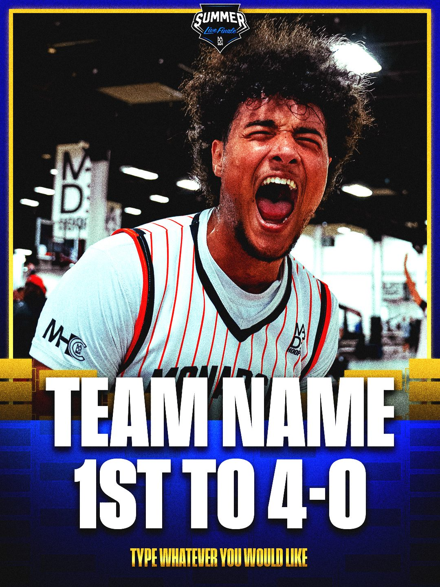
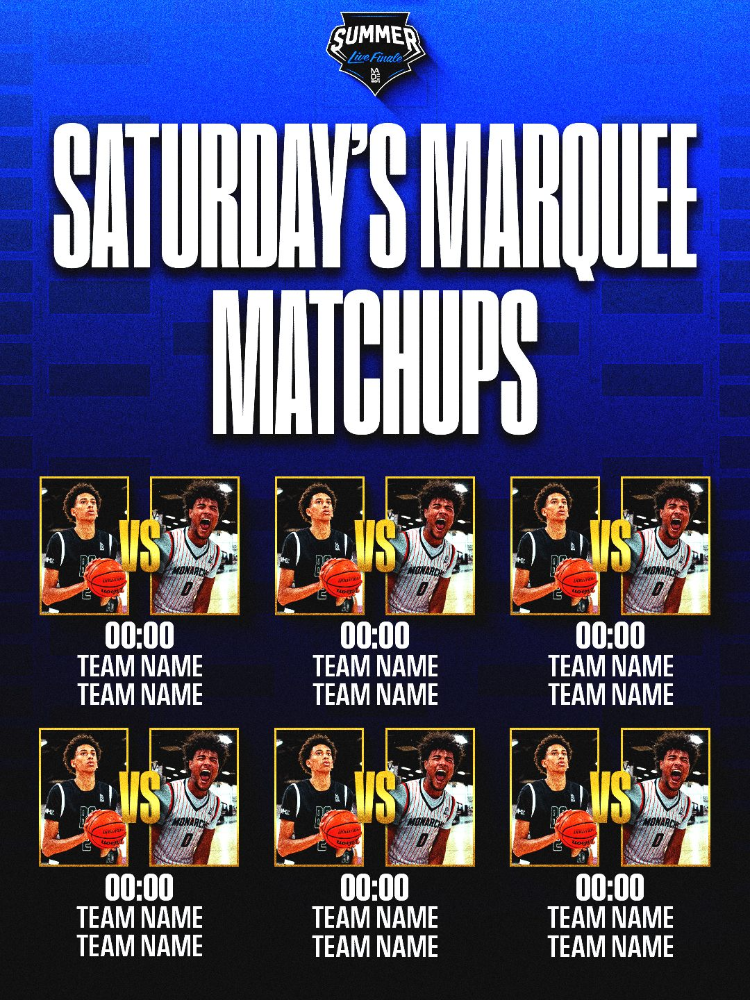
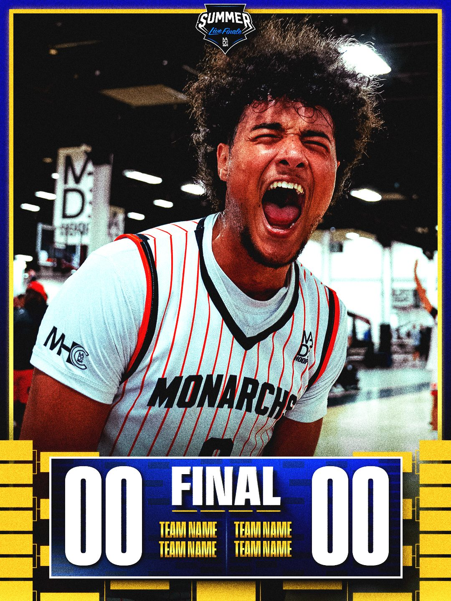
9:16 · story graphics
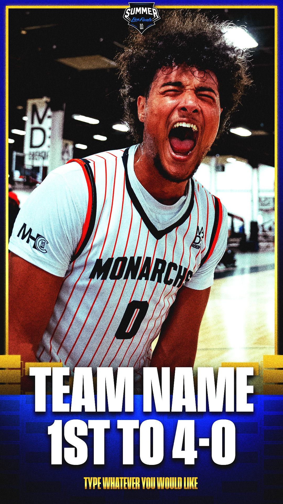
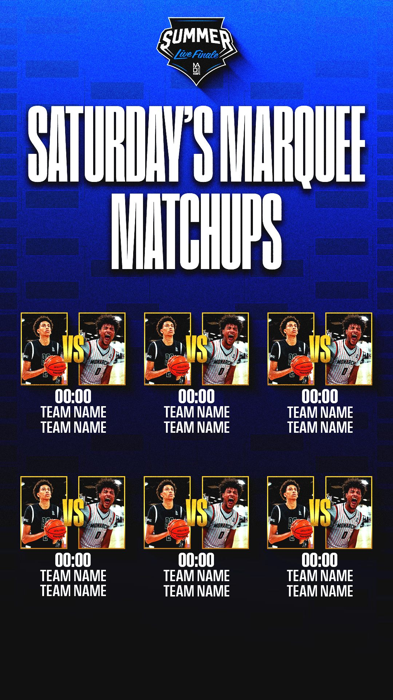
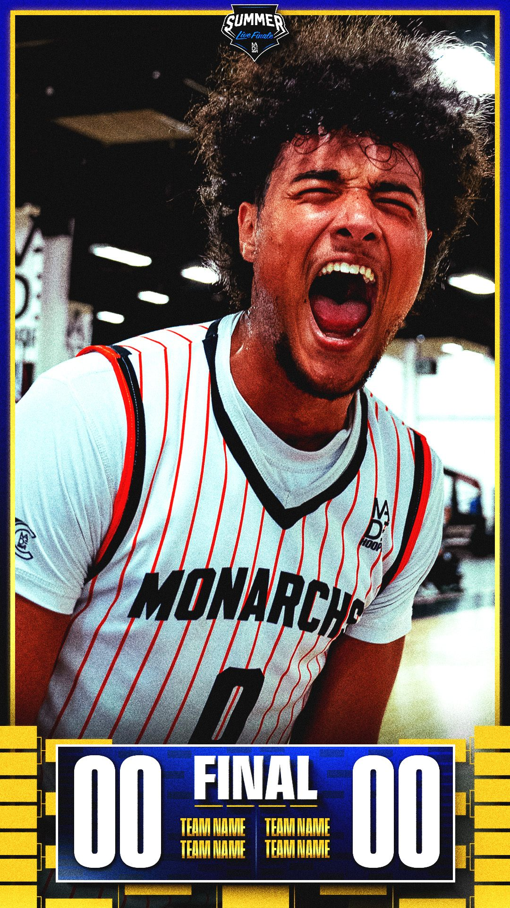
16:9 · landscape score
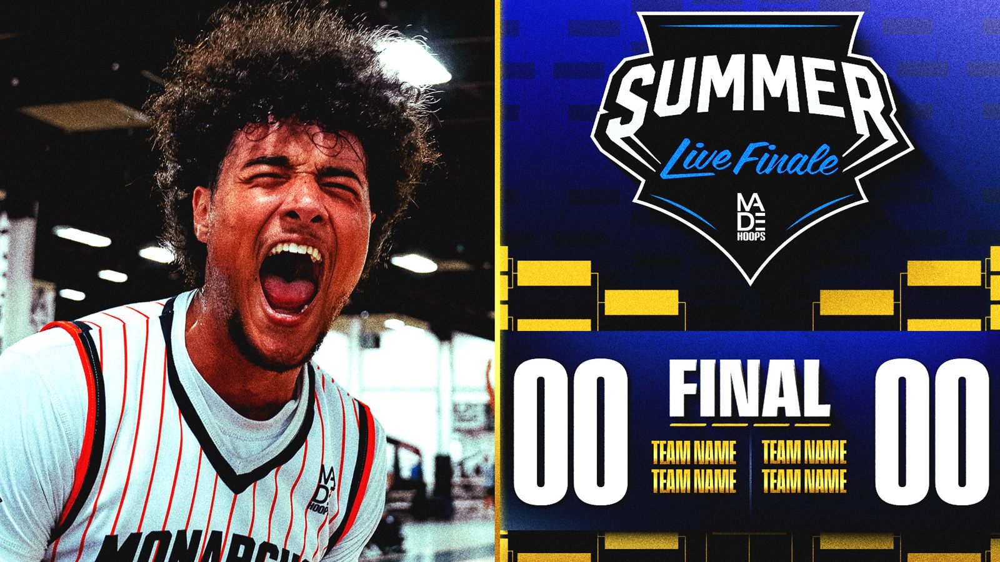
04
Social Media Templates
4:5 · portrait templates
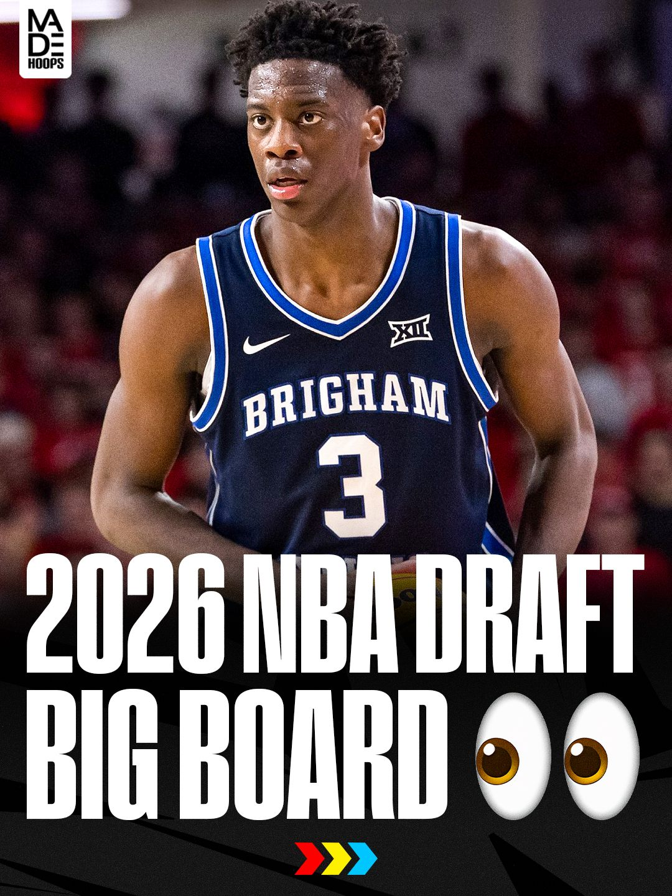
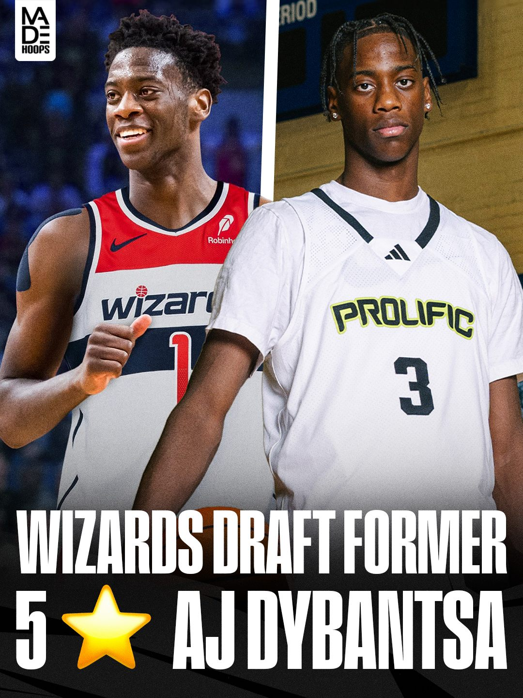
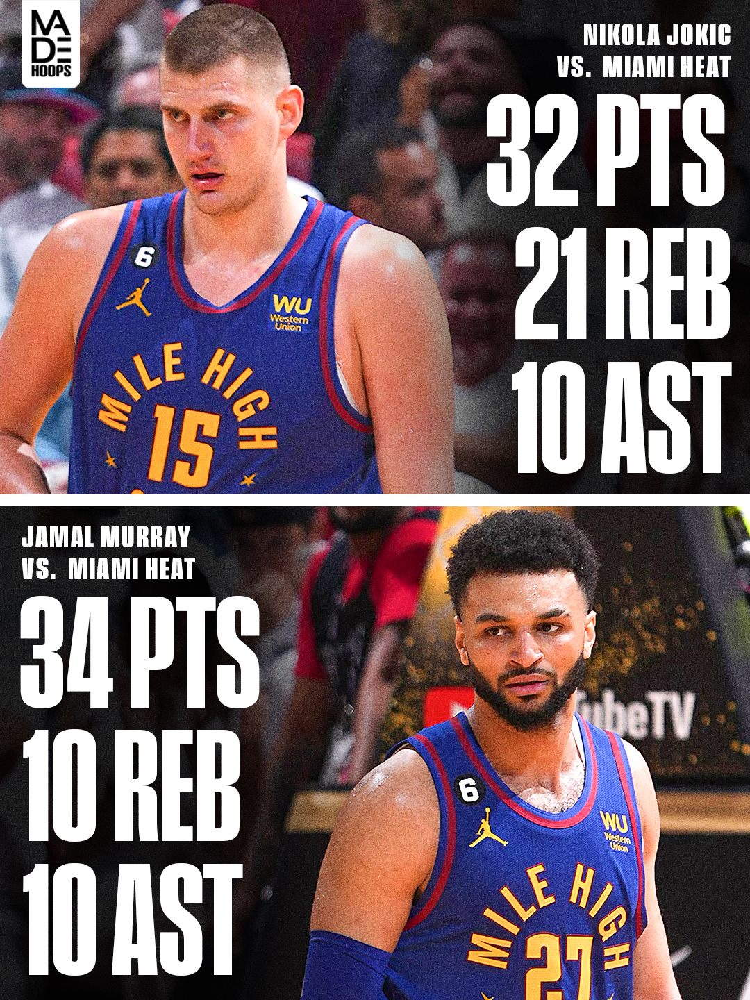
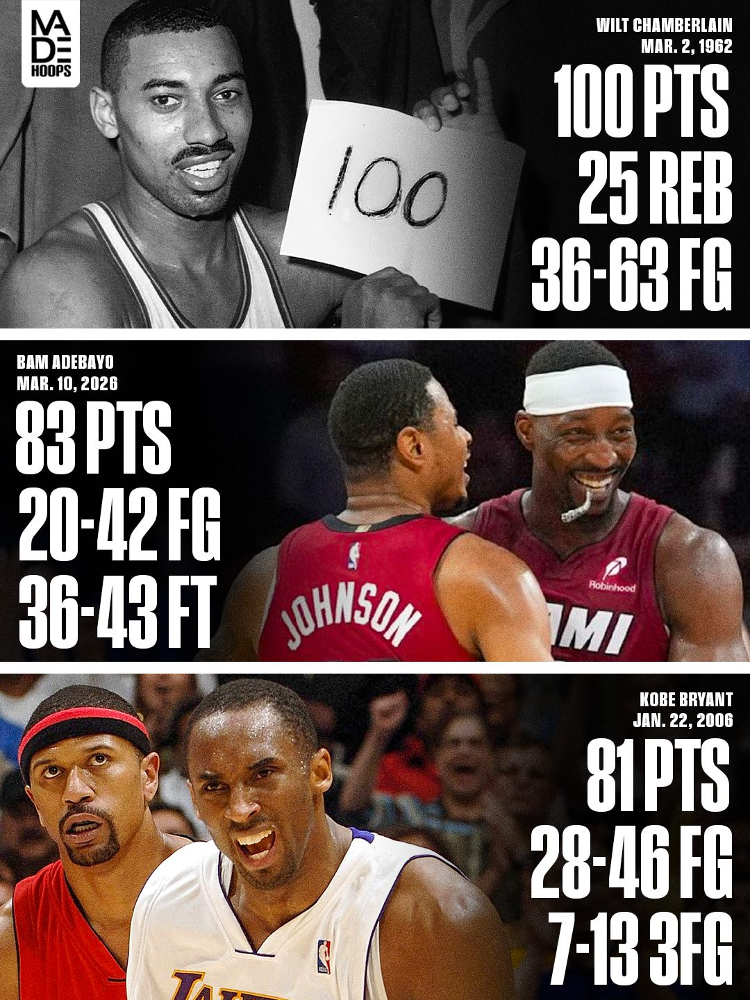
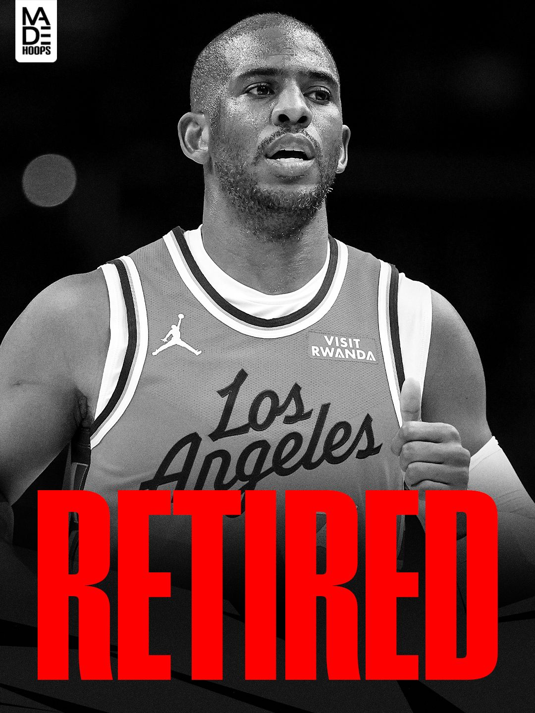
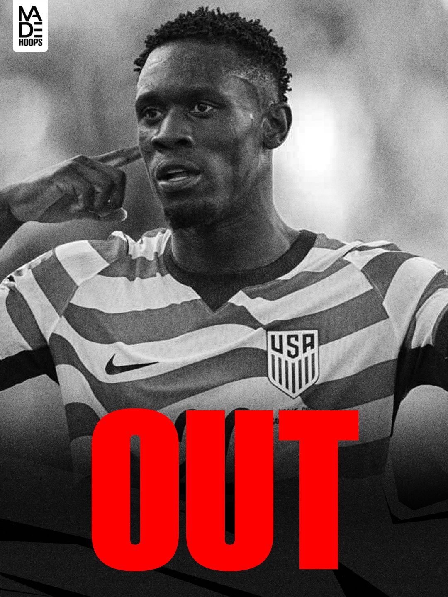
05
Recruiting Round-Up
4:5 · player features


06
ESPN Rankings
4:5 · ranked prospects